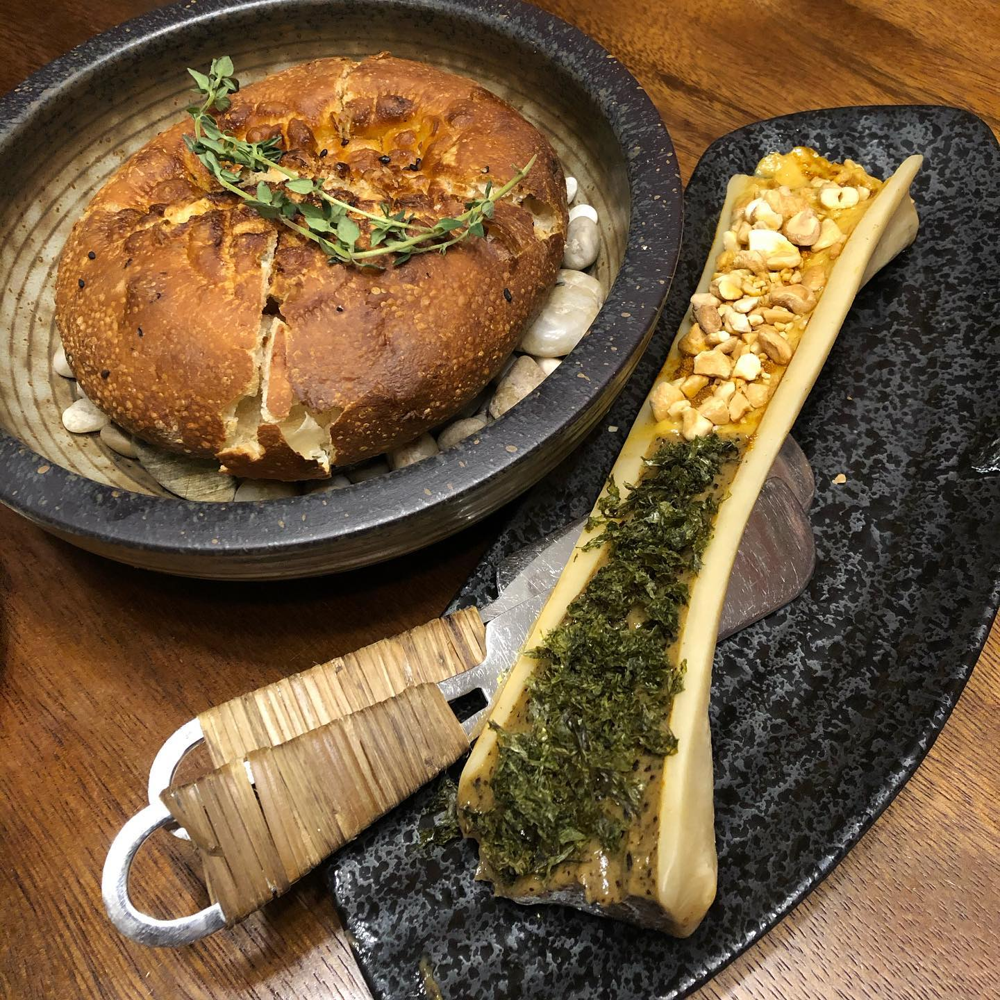
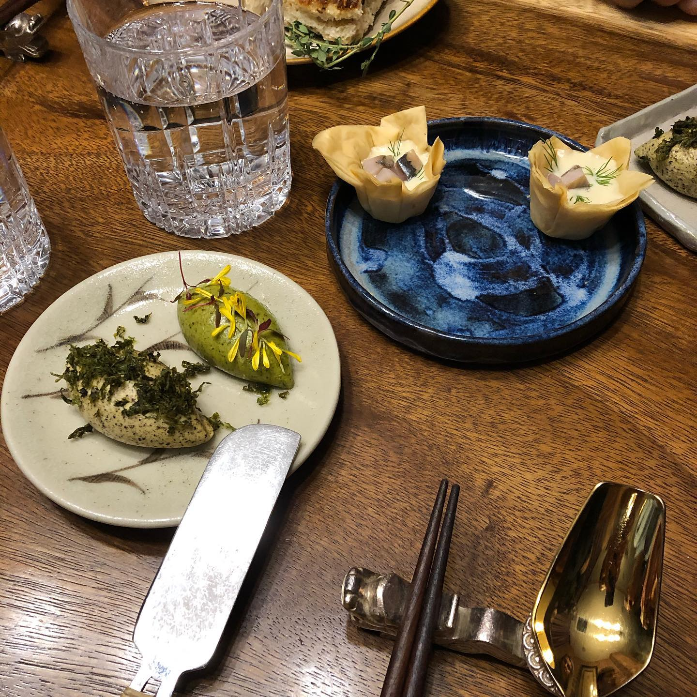
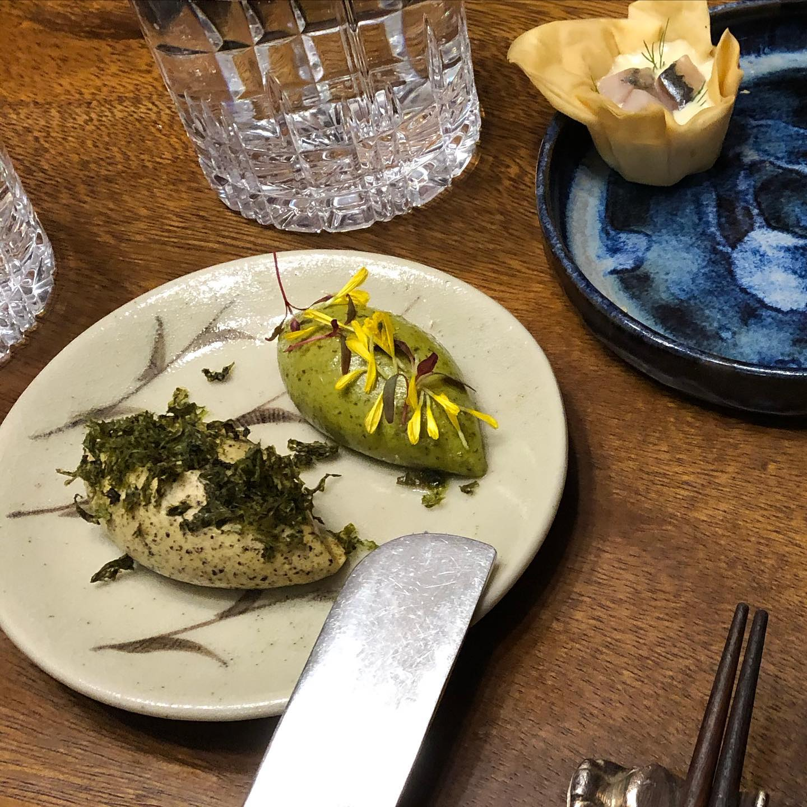
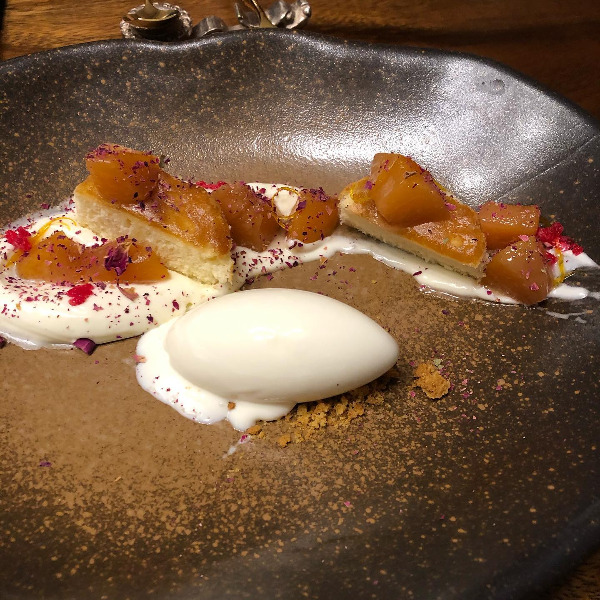
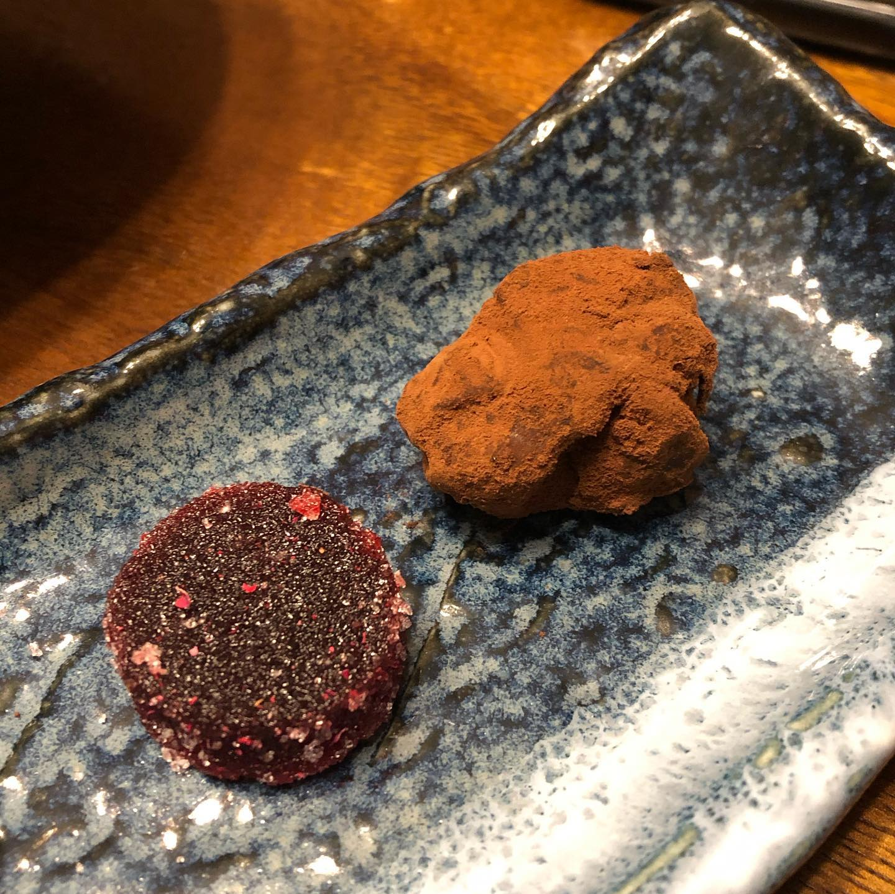

Central Asian fusion fairytale at @thenomadssg #throwback to last week’s absolutely delicious dinner 😋 Loved the Southeast Asian touch to our favourite Central Asian cuisine that doesn’t exist in Singapore at all 👌🏼captured on photos only some dishes from our dinner, we were so hungry and everything was so delicious that we forgot to snap pictures 😄 oh well, good excuse to come back for another scrumptious dinner 😉 __ #thenomadssg #tomeoutsg #eatingout #sgeats #sgfoodie #foodsg #foodblogfeed
2021-02-11 16:24:31
Back to main page